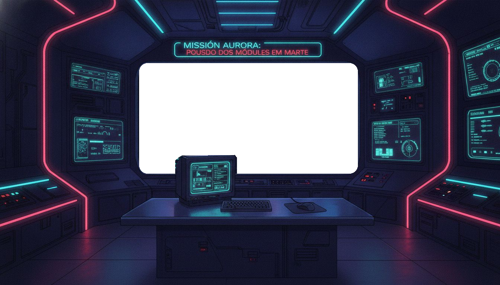

MISSÃO AURORA:
POUSO DOS MÓDULOS EM MARTE
MISSÃO
MGPEB
FILA DE POUSO
AUTORIZAÇÃO
COMBUSTÍVEL
kg
MGPEB://LOG
ÓRBITA
BASE
ÁREA DE POUSO
CENÁRIO
↺
▶
⏭
1x
2x
4x
clique numa tela para ampliar
ESTRUTURAS
índices do cadastro
LÓGICA DE DECISÃO